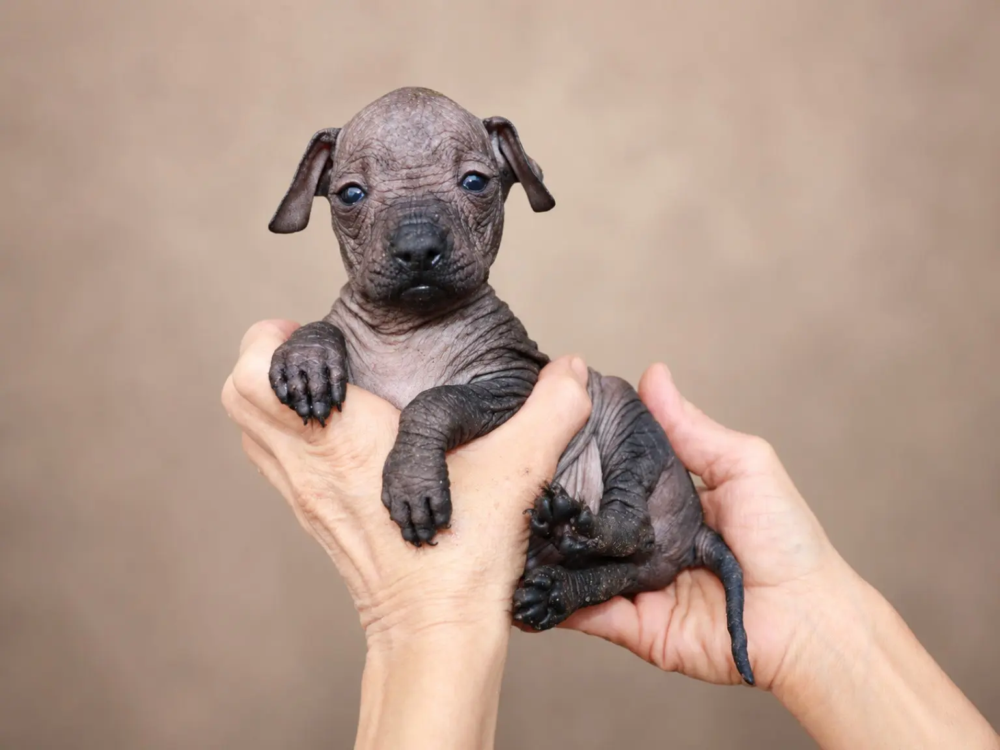
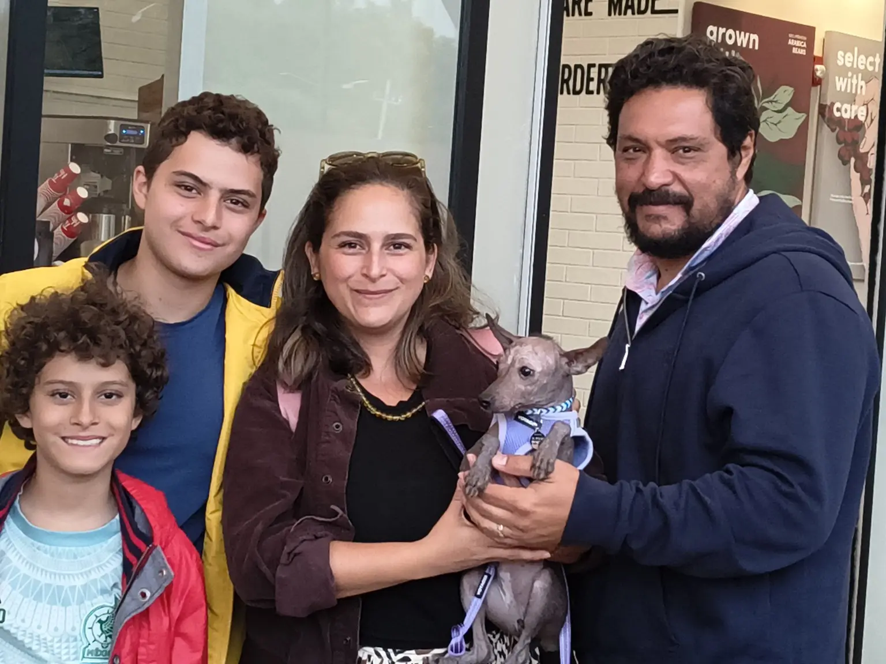

La camada sigue creciendo y cada nueva etapa merece quedar documentada. El 20 de agosto de 2026, siete cachorros xoloitzcuintles de Xolos Ramírez, con aproximadamente un mes y medio de edad, recibieron su vacuna Puppy.
La jornada reunió el cuidado cotidiano, la identificación individual de cada cachorro y el registro audiovisual de un momento concreto de su desarrollo. No se trató solamente de conservar la fecha: también de dejar constancia de quiénes integran la camada y de acompañar su crecimiento con un seguimiento ordenado.

Siete cachorros, siete identidades
La camada está formada por cuatro xoloitzcuintles con pelo y tres sin pelo. Registrar esta diferencia permite presentar a cada cachorro con claridad, sin perder de vista que todos compartieron la misma etapa de seguimiento el 20 de agosto.
Xoloitzcuintles con pelo
- Yolotzin Ramírez
- Chalchi Ramírez
- Malinali Ramírez
- Xanat Ramírez
Xoloitzcuintles sin pelo
- Xóchitl Ramírez
- Yohualli Ramírez
- Tonalli Ramírez
Nombrarlos individualmente es una parte central de este archivo. Yolotzin, Chalchi, Malinali, Xanat, Xóchitl, Yohualli y Tonalli avanzan juntos como camada, pero el seguimiento de su desarrollo conserva la identidad propia de cada uno.
La jornada del 20 de agosto
Al llegar aproximadamente al mes y medio de edad, los siete cachorros participaron en esta jornada de vacunación. La aplicación de la vacuna Puppy quedó incorporada a la cronología de la camada como una etapa más del acompañamiento sanitario que se realiza con el veterinario.
En Xolos Ramírez documentamos el crecimiento de los cachorros desde sus primeras semanas. Las fotografías, los nombres y las fechas permiten construir una memoria continua: no una sucesión de imágenes aisladas, sino un registro que muestra cómo evoluciona la camada y qué momentos forman parte de su cuidado.

Emisión en vivo de la Vacunación Xoloitzcuintle
La jornada también fue transmitida y publicada como una emisión en vivo de la Vacunación Xoloitzcuintle. El video completo permanece disponible como evidencia audiovisual pública de esta etapa de la camada.
Si el reproductor no carga, puedes ver la transmisión original en YouTube.
Continuidad del seguimiento veterinario
Esta jornada no cierra el seguimiento de la camada. A partir de aquí continuará la observación individual de los siete cachorros y la revisión de las etapas posteriores de su esquema con el veterinario.
Siguiente etapa prevista
Como parte del seguimiento de la camada, se tiene contemplado revisar con el veterinario la siguiente etapa del esquema de vacunación alrededor del 10 de septiembre de 2026. La referencia prevista es Vanguard Plus 5 L4 CV, sujeta a la confirmación del esquema y del estado de cada cachorro por el veterinario.
Conservar este registro permite volver a una fecha, reconocer a cada integrante de la camada y mantener visible la continuidad de su desarrollo. La transmisión completa y las fotografías del 20 de agosto forman parte de esa memoria documental de Xolos Ramírez.
Siete cachorros, una misma jornada y siete historias que continúan creciendo.